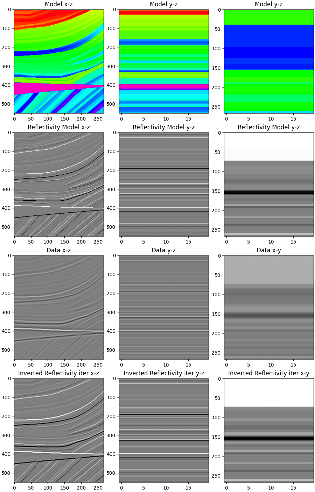

Note
Go to the end to download the full example code.
Reflectivity Inversion - 3D#
This is a follow up of the Post Stack Inversion - 3D tutorial. The same seismic data will be considered, however instead of inverting it for an absolute impedance model the reflectivity is targetted.
In other words, the modelling operator becomes
where \(\text{r}(t)\) is the reflectivity profile and \(w(t)\) is the time domain seismic wavelet. Similar to the other example, being this inherently a 1d operator, we can easily set up a problem where one of the dimensions (here the y-dimension) is distributed across ranks and each of them is in charge of performing modelling for a subvolume of the entire domain.
However, since a reflectivity model is sparse, the pylops.optimization.ISTA
solver is used here.
import numpy as np
from matplotlib import pyplot as plt
from mpi4py import MPI
from pylops.utils.wavelets import ricker
from pylops.basicoperators import FirstDerivative
from pylops.signalprocessing import Convolve1D
import pylops_mpi
plt.close("all")
rank = MPI.COMM_WORLD.Get_rank()
size = MPI.COMM_WORLD.Get_size()
Let’s start by defining all the parameters required by the
pylops.avo.poststack.PoststackLinearModelling operator.
# Model
model = np.load("../testdata/avo/poststack_model.npz")
x, z, m = model['x'][::3], model['z'], np.log(model['model'])[:, ::3]
# Making m a 3D model
ny_i = 20 # size of model in y direction for rank i
y = np.arange(ny_i)
m3d_i = np.tile(m[:, :, np.newaxis], (1, 1, ny_i)).transpose((2, 1, 0))
ny_i, nx, nz = m3d_i.shape
# Size of y at all ranks
ny = MPI.COMM_WORLD.allreduce(ny_i)
# Wavelet
dt = 0.004
t0 = np.arange(nz) * dt
ntwav = 41
wav, _, wavc = ricker(t0[:ntwav // 2 + 1], 15)
# Collecting m3d at all ranks
m3d = np.concatenate(MPI.COMM_WORLD.allgather(m3d_i))
We now create the linear operators to model the data (including a time derivative as in the post-stack tutorial) as well as that to invert the data for the underlying reflectivity model.
# Create flattened model data
m3d_dist = pylops_mpi.DistributedArray(global_shape=ny * nx * nz)
m3d_dist[:] = m3d_i.flatten()
# LinearOperator Derivative + Convolve
Dop = FirstDerivative((ny_i, nx, nz), axis=-1)
Cop = Convolve1D((ny_i, nx, nz), wav, offset=wavc, axis=-1)
DDiag = pylops_mpi.basicoperators.MPIBlockDiag(ops=[Dop, ])
CDiag = pylops_mpi.basicoperators.MPIBlockDiag(ops=[Cop, ])
# Reflectivity
r_dist = DDiag @ m3d_dist
r_local = r_dist.local_array.reshape((ny_i, nx, nz))
r = r_dist.asarray().reshape((ny, nx, nz))
# Data
d_dist = CDiag @ r_dist
d_local = d_dist.local_array.reshape((ny_i, nx, nz))
d = d_dist.asarray().reshape((ny, nx, nz))
We now perform sparsity-promotion inversion
maxeieur 46.490644491857324
ISTA (soft thresholding)
--------------------------------------------------------------------------------
The Operator Op has 2937000 rows and 2937000 cols
eps = 1.000000e-02 tol = 1.000000e-08 niter = 200
alpha = 2.150970e-02 thresh = 1.075485e-04
--------------------------------------------------------------------------------
Itn x[0] r2norm r12norm xupdate
1 -5.5878e-04 1.921e+04 1.947e+04 2.460e+01
2 -8.3874e-04 2.848e+03 3.142e+03 6.204e+00
3 -7.0748e-04 1.460e+03 1.773e+03 3.519e+00
4 -4.5109e-04 9.658e+02 1.290e+03 2.462e+00
5 -1.8638e-04 7.118e+02 1.043e+03 1.894e+00
6 -0.0000e+00 5.574e+02 8.941e+02 1.534e+00
7 0.0000e+00 4.542e+02 7.950e+02 1.284e+00
8 0.0000e+00 3.809e+02 7.248e+02 1.102e+00
9 0.0000e+00 3.263e+02 6.728e+02 9.631e-01
10 0.0000e+00 2.843e+02 6.328e+02 8.549e-01
11 0.0000e+00 2.510e+02 6.010e+02 7.680e-01
21 0.0000e+00 1.075e+02 4.617e+02 3.760e-01
31 0.0000e+00 6.416e+01 4.159e+02 2.478e-01
41 0.0000e+00 4.434e+01 3.921e+02 1.857e-01
51 0.0000e+00 3.336e+01 3.768e+02 1.504e-01
61 0.0000e+00 2.656e+01 3.656e+02 1.274e-01
71 0.0000e+00 2.204e+01 3.569e+02 1.100e-01
81 0.0000e+00 1.889e+01 3.501e+02 9.782e-02
91 0.0000e+00 1.654e+01 3.443e+02 8.917e-02
101 0.0000e+00 1.471e+01 3.393e+02 8.224e-02
111 0.0000e+00 1.326e+01 3.349e+02 7.640e-02
121 0.0000e+00 1.208e+01 3.310e+02 7.129e-02
131 0.0000e+00 1.111e+01 3.276e+02 6.633e-02
141 -0.0000e+00 1.031e+01 3.245e+02 6.196e-02
151 -0.0000e+00 9.647e+00 3.219e+02 5.795e-02
161 -0.0000e+00 9.099e+00 3.195e+02 5.394e-02
171 -0.0000e+00 8.637e+00 3.174e+02 5.118e-02
181 -0.0000e+00 8.228e+00 3.155e+02 4.896e-02
191 -0.0000e+00 7.865e+00 3.137e+02 4.656e-02
192 -0.0000e+00 7.832e+00 3.136e+02 4.635e-02
193 -0.0000e+00 7.799e+00 3.134e+02 4.615e-02
194 -0.0000e+00 7.766e+00 3.132e+02 4.595e-02
195 -0.0000e+00 7.733e+00 3.131e+02 4.575e-02
196 -0.0000e+00 7.701e+00 3.129e+02 4.556e-02
197 -0.0000e+00 7.669e+00 3.128e+02 4.537e-02
198 -0.0000e+00 7.638e+00 3.126e+02 4.519e-02
199 -0.0000e+00 7.607e+00 3.124e+02 4.501e-02
200 -0.0000e+00 7.577e+00 3.123e+02 4.484e-02
Iterations = 200 Total time (s) = 74.20
--------------------------------------------------------------------------------
Finally, we display the modeling and inversion results
if rank == 0:
# Check the distributed implementation gives the same result
# as the one running only on rank0
Dop0 = FirstDerivative((ny, nx, nz), axis=-1)
Cop0 = Convolve1D((ny, nx, nz), wav, offset=wavc, axis=-1)
r0 = Dop0 @ m3d
d0 = Cop0 @ r0
# Check the two distributed implementations give the same modelling results
print('Reflectivity Distr == Local', np.allclose(d, d0))
print('Data Distr == Local', np.allclose(r, r0))
# Visualize
fig, axs = plt.subplots(nrows=4, ncols=3, figsize=(9, 14), constrained_layout=True)
axs[0][0].imshow(m3d[5, :, :].T, cmap="gist_rainbow", vmin=m.min(), vmax=m.max())
axs[0][0].set_title("Model x-z")
axs[0][0].axis("tight")
axs[0][1].imshow(m3d[:, 200, :].T, cmap="gist_rainbow", vmin=m.min(), vmax=m.max())
axs[0][1].set_title("Model y-z")
axs[0][1].axis("tight")
axs[0][2].imshow(m3d[:, :, 220].T, cmap="gist_rainbow", vmin=m.min(), vmax=m.max())
axs[0][2].set_title("Model y-z")
axs[0][2].axis("tight")
axs[1][0].imshow(r[5, :, :].T, cmap="gray", vmin=-.1, vmax=.1)
axs[1][0].set_title("Reflectivity Model x-z")
axs[1][0].axis("tight")
axs[1][1].imshow(r[:, 200, :].T, cmap="gray", vmin=-.1, vmax=.1)
axs[1][1].set_title("Reflectivity Model y-z")
axs[1][1].axis("tight")
axs[1][2].imshow(r[:, :, 220].T, cmap="gray", vmin=-.1, vmax=.1)
axs[1][2].set_title("Reflectivity Model y-z")
axs[1][2].axis("tight")
axs[2][0].imshow(d[5, :, :].T, cmap="gray", vmin=-1, vmax=1)
axs[2][0].set_title("Data x-z")
axs[2][0].axis("tight")
axs[2][1].imshow(d[:, 200, :].T, cmap='gray', vmin=-1, vmax=1)
axs[2][1].set_title('Data y-z')
axs[2][1].axis('tight')
axs[2][2].imshow(d[:, :, 220].T, cmap='gray', vmin=-1, vmax=1)
axs[2][2].set_title('Data x-y')
axs[2][2].axis('tight')
axs[3][0].imshow(rinv3d[5, :, :].T, cmap='gray', vmin=-.1, vmax=.1)
axs[3][0].set_title("Inverted Reflectivity iter x-z")
axs[3][0].axis("tight")
axs[3][1].imshow(rinv3d[:, 200, :].T, cmap='gray', vmin=-.1, vmax=.1)
axs[3][1].set_title('Inverted Reflectivity iter y-z')
axs[3][1].axis('tight')
axs[3][2].imshow(rinv3d[:, :, 220].T, cmap='gray', vmin=-.1, vmax=.1)
axs[3][2].set_title('Inverted Reflectivity iter x-y')
axs[3][2].axis('tight')

Reflectivity Distr == Local True
Data Distr == Local True
To run this tutorial with our NCCL backend, refer to Reflectivity Inversion with NCCL tutorial in the repository.
Total running time of the script: (1 minutes 15.427 seconds)